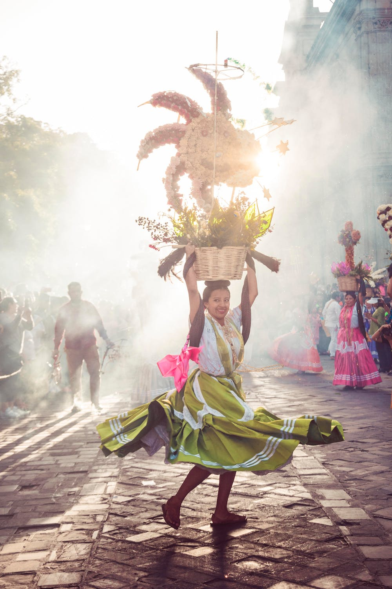

Food
Events
Culture
Monuments
Tradition Activities
We practice one of many traditions in Thailand. We launch small candle lit boats into the water to make wishes and welcome happiness. It is practiced in different parts of Asia in their unique way with their historical background. It not only takes us to a childhood moment by making a paper boat but at the same time provides positivity that we share with everyone involved. It can be considered romantic as well for couples. We love to share magical moments that can be practiced wherever we may be to pass the hope and may it reach further.